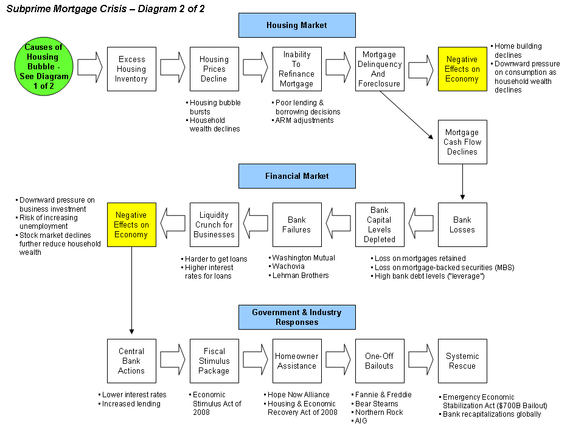

第 14 章
制度的茧房
如果要在那本合规手册的时间轴图表下方再补一条注释，内容大概就是这样——一家银行用自家评级最高的债券去借央行的钱。这听起来像是一个不需要解释的操作。优质抵押品换取流动性，教科书级别的稳健管理。
但这里有一个反直觉的事实：在2007年夏天，欧洲央行接受的银行间回购抵押品中，有相当比例是银行自己发行的资产支持证券——银行创造出一个金融产品，自己给它贴上高评级标签，然后用它作为抵押物从央行获取资金。整个链条在当时的监管框架下完全合规。巴塞尔协议II对这类资产赋予了极低的风险权重，因为评级机构说它们是三A级。监管规则说：持有三A级资产，你几乎不需要为它准备资本金。央行抵押品规则说：三A级证券是合格的优质抵押品。规则没有错。评级没有错。资本充足率计算没有错。
问题出在一个更深的层面：所有这些“没有错”叠加在一起，制造了一个系统性的盲区。而这个盲区恰恰是由那些为了防止上一场危机而精心设计的规则所创造的。要理解这件事为什么会发生，我们需要回到1988年。
那一年，来自十二个国家的中央银行行长和监管官员在瑞士巴塞尔坐下来，签署了一份看似技术性的文件——《巴塞尔资本协议》。它的核心要求简单到可以用一句话说完：国际活跃银行的资本充足率不得低于8%。也就是说，银行每放出100块钱的贷款，自己至少得拿出8块钱的本金兜底。
这个8%是怎么来的？没有人能从经济学第一原理推导出这个数字。它来自一场谈判。各国监管者带着各自银行体系的现状坐到桌前，经过多轮博弈和妥协，最终落在一个各方都能接受的整数上。8%不是自然常数，它是政治算术的产物。
但一旦被写进规则文本，8%就获得了一种它本来不具备的权威感。它从谈判桌上的妥协数字变成了“审慎监管的科学标准”。银行开始按照8%来校准自己的风险承担行为。监管者开始用8%来衡量一家银行是否安全。市场开始用8%来判断一家银行的稳健程度。这个过程本身就是一个认知偏误的经典案例：锚定效应。
一个任意的初始数字一旦被确立为参照点，后续的所有判断都会围绕它进行调整，而不会质疑它本身的合理性。巴塞尔协议I的8%成为了全球银行监管的锚。此后三十年，所有关于资本充足率的争论都是在这个锚附近展开的——应该提高到10%还是12%？应该针对不同类型资产设置不同权重吗？但很少有人问：用单一数字来捕捉所有银行的所有风险，这个思路本身是不是有问题？
巴塞尔协议I的设计者们并非没有意识到这个问题。他们知道8%是一个粗糙的工具。但他们面对的是一个更紧迫的现实：1980年代，多国银行在国际信贷扩张中积累了大量风险，而各国监管标准不一，导致银行可以通过跨境套利规避监管。需要一个共同标准，越快越好。
8%的简单规则虽然粗糙，但至少能阻止最恶劣的资本不足行为。这是一种典型的“可用性启发式”：眼前的危机定义了问题的边界。1970年代和1980年代初的银行危机主要来自对发展中国家的主权贷款违约。
赫斯塔特银行在1974年因为外汇交易亏损倒闭，震动了整个欧洲银行体系。这些事件塑造了监管者的风险想象：银行倒闭是因为放贷太多而资本太少。解决方案自然是要求银行持有更多资本。
巴塞尔协议I在1992年正式实施。它的效果立竿见影：全球银行业的平均资本充足率显著上升。监管者宣布胜利。市场相信银行变得更安全了。
然后亚洲金融危机来了。1997年，从泰国到韩国到印度尼西亚，货币崩盘，银行挤兑，经济衰退。巴塞尔协议I的8%规则在这些国家普遍适用，但危机仍然发生了。
事后分析揭示了一个尴尬的事实：许多亚洲银行在危机前确实满足了8%的资本充足率要求，但它们的资产负债表上隐藏着巨大的期限错配风险——借短期美元贷款，放长期本币贷款。当外资突然撤离，本币贬值，这些银行的资本在几周内就被汇率损失吞噬殆尽。8%的资本充足率没有错。但它衡量的是信用风险，而杀死亚洲银行的首先是流动性风险和汇率风险。
监管规则为银行提供了一张体检表，但体检表只检查了上一场战争中的致命伤。
巴塞尔协议II的制定工作正是在这个背景下启动的。这一次，监管者决心做得更好。他们不再满足于简单的8%规则，而是设计了一套复杂得多的体系：三大支柱——最低资本要求、监管审查、市场纪律。风险权重不再一刀切，而是根据资产的实际风险状况精细划分。
最引人注目的创新是允许大银行使用自己的内部模型来计算风险。这个想法的逻辑听起来无懈可击：没有人比银行自己更了解自己的风险。让最先进的银行用最精密的数学模型来量化风险，监管者审核这些模型的有效性，市场通过信息披露来约束银行的行为。三大支柱相互支撑，形成一个自我强化的安全网。
2004年，巴塞尔协议II最终定稿。全球监管界普遍认为这是一项里程碑式的成就。它代表了制度学习的最高水平：从1988年的简单规则进化到了基于风险敏感性的精细管理体系。
三年后，全球金融体系经历了自大萧条以来最严重的危机。我们得在这里停下来问一个问题：为什么？
为什么一群世界上最聪明、最有经验的监管者，花了近十年时间设计的制度，在实施仅仅三年后就遭遇了灾难性的失败？
常见的解释是指责监管者被银行俘获、或者指责他们天真地相信数学模型。这些解释有部分道理，但它们忽略了一个更深层的认知机制。
要理解这个机制，我们需要仔细看看巴塞尔协议II中一个不起眼但至关重要的细节：风险权重的设定方式。在巴塞尔协议II的框架下，不同类型的资产被赋予不同的风险权重。主权债券风险权重为零——借给政府的钱被认为没有风险。住房抵押贷款的风险权重为35%——因为历史数据显示人们会优先偿还房贷。企业贷款的风险权重为100%。而资产支持证券的风险权重取决于它们的评级：三A级可以低至20%。
这些数字不是任意设定的。它们来自对历史违约数据的统计分析。监管者调阅了过去几十年的贷款违约记录，计算出各类资产的平均损失率，据此设定风险权重。这个过程在方法论上是严谨的。
但这里有一个被忽略的问题：历史数据告诉你的是过去发生了什么，而不是未来可能发生什么。更准确地说，历史数据告诉你的是在过去的制度环境、市场结构和参与者行为模式下发生了什么。当制度本身改变了市场结构和参与者行为，历史数据的预测能力就会瓦解。
巴塞尔协议II赋予住房抵押贷款较低的风险权重，这一规则设计本身刺激了银行扩大按揭贷款业务。更多的贷款需求推动了房价上涨。房价上涨使得按揭贷款的历史违约率看起来更低——因为即使借款人还不起贷款，上涨的房价也允许他们再融资或者卖房还债。更低的历史违约率似乎在验证低风险权重的合理性。这反过来又鼓励银行进一步扩张按揭贷款。
这是一个自我强化的循环。制度设计改变了它所观察的对象的行为，而制度本身却依赖于对旧行为的观察来校准规则。
社会科学家把这种现象称为“古德哈特定律”：当一个指标成为政策目标，它就不再是一个好的指标。但问题比古德哈特定律更深一层。它不仅关乎指标的失效，更关乎指标制造了一种被保护的错觉。
想象你是一家银行的风险经理，在2006年评估你持有的资产支持证券组合的风险。你的内部模型告诉你，这些三A级证券的历史违约率接近于零。巴塞尔协议II告诉你，它们只需要极低的资本金。外部审计师和评级机构都认可这个判断。你的老板、股东、交易对手都看着合规部门出具的报告——一切都在监管框架内。你没有任何理由感到不安。
但不安是一种生理信号。我们在第5章讨论过躯体标记假说：大脑在决策时不仅依赖理性分析，还依赖身体对过往经验的情感记忆。当你面对一个与过去危险情境相似的选择时，你的身体会先于意识产生一种警告感——手心出汗、心跳加快、胃部收紧。这种信号帮助你避开潜在的陷阱。问题在于，躯体标记需要亲历才能形成。
2006年的风险经理——假设他三十五岁——在他的职业生涯中经历过什么？他可能经历过2000年的互联网泡沫破裂，可能经历过1998年的长期资本管理公司危机。但他没有经历过系统性住房市场崩盘。
美国的全国性房价下跌上一次发生在大萧条时期，那是他祖父的年代。他的身体里没有房价崩盘的躯体标记。
而制度给了他一个替代品：合规清单。每一项都打了勾。资本充足率达标。风险权重合规。压力测试通过。监管审查通过。这些勾选动作产生了一种确定的感受——不是恐惧被消除了，而是恐惧被一个结构化的确认程序替代了。
这正是巴塞尔协议II最深层的认知陷阱：它将风险判断从人的身体转移到了文本上。一个经验丰富的信贷员在1980年代审批贷款时，他可能会因为借款人眼神闪烁而感到不安——即使财务报表看起来没问题。这种不安可能毫无道理，也可能救他一命。
但在巴塞尔协议II的世界里，信贷员的直觉被模型输出取代了。模型说风险权重20%，那就是20%。如果模型错了，那是模型的问题，不是决策者的问题。制度文本化了一个悖论：它把恐惧从决策过程中过滤掉了，而恐惧恰恰是防止重蹈覆辙的最古老也最有效的机制。2008年之后发生的事情完美地印证了这个悖论。
危机爆发后，全球监管界以惊人的速度行动起来。2009年，巴塞尔委员会开始制定巴塞尔协议III。
这一次的重点是流动性——危机中许多银行不是资不抵债，而是无法在短期内获得足够的现金来应对挤兑和保证金追缴。巴塞尔协议III引入了两个全新的指标：流动性覆盖率，要求银行持有足够的高质量流动资产来应对三十天的压力情景；净稳定资金比率，要求银行的长期资产有足够的稳定资金来源。
这两个指标的引入是制度学习的教科书案例。监管者仔细研究了2008年危机的每一个细节：雷曼兄弟倒闭后回购市场的冻结、贝尔斯登在三天内耗尽了180亿美元现金、北岩银行在挤兑面前毫无还手之力。所有这些痛苦的教训都被编码进了新规则。
2010年代，全球银行体系经历了一场深刻的资产负债表重塑。银行削减了高风险交易业务，增加了政府债券持有量，延长了负债期限。资本充足率大幅提升，流动性缓冲成倍增长。到2020年新冠疫情冲击全球市场时，银行体系确实展现出了比2008年强得多的韧性。
巴塞尔协议III成功了。这句话需要加上一个限定词：在它被设计要应对的那些风险面前，它成功了。
但代价是什么？让我们看一个具体的案例。2010年代中期，一家欧洲大型银行为了满足净稳定资金比率的要求，需要增加长期负债的比例。它发行了大量五年期和十年期债券，用募集的资金购买了政府债券——主要是欧元区核心国家的主权债。在监管表格上，这一操作同时改善了流动性覆盖率和净稳定资金比率。政府债券是最高质量的流动资产，长期债券是稳定的资金来源。合规部门满意了。监管者满意了。
但银行的资产和负债在利率风险面前变得高度不匹配。如果利率突然上升——比如因为通胀意外飙升——这些长期固定利率债券的市场价值将大幅下跌。而政府债券虽然信用风险低，但在利率上升环境中同样会遭受价格损失。这家银行满足了两项新指标，却创造了第三项风险。
这不是一个孤立的案例。巴塞尔协议III在全球范围内推动银行增持政府债券——因为这些债券在流动性监管框架中被视为最安全的资产。
结果是，到2019年，欧元区银行持有的本国政府债券占其总资产的比例达到了历史高位。银行体系与主权信用之间的关联不是减弱了，而是加强了。而这恰恰是2010-2012年欧元区债务危机的核心传导机制——银行持有大量本国政府债券，政府财政恶化导致债券价格下跌，银行资产缩水引发市场恐慌，恐慌进一步推高政府融资成本。
制度堵住了2008年暴露的流动性漏洞，但在这个过程中，它可能正在制造一个新的主权-银行恶性循环的脆弱点。这让我们回到了本章开头提出的那个悖论：为防止重蹈覆辙而建立的制度，常常成为下一次危机的孵化器。
这不是制度的失败——至少不是通常意义上的失败。这是一种结构性的认知边界。监管者是人。他们的大脑和其他人一样受制于躯体标记机制、可用性启发式和锚定效应。2008年危机之后的监管者亲历了流动性枯竭的恐怖。他们亲眼看到运转了几十年的银行间市场在一夜之间冻结。他们接到了恐慌的电话，参加了紧急会议，在凌晨三点审阅救助方案。
这些经历在他们的神经回路里刻下了深刻的躯体标记。所以他们设计的制度着重解决流动性风险。他们无法为他们没有经历过的事情设计同样精细的防护。巴塞尔协议III的压力测试要求银行模拟各种极端情景：经济衰退、失业率飙升、资产价格暴跌。
但这些情景都是从历史数据中选取的“严重但可能”的情景。2020年之前，没有任何压力测试包含“全球大流行病导致经济活动骤停”这个情景——因为在2020年之前，这个情景不在任何监管机构的风险想象范围内。这不是制度设计的失败。这是制度设计的本质限制。制度是由人设计的，而人的风险想象力同样受制于自己的躯体标记和经历范围。
现在我们可以回应那个反方解释了。批评者说，“代价盲视”不过是事后归因的叙事幻觉——人们并非看不见代价，而是在信息不完备、时间压力下做了当时最优的贝叶斯更新，事后被结果偏差重新编码为“盲目”。这个批评有道理。2006年的风险经理确实做了当时看起来最优的判断。
他使用的模型是行业标准，他参考的数据是最新的历史统计，他遵循的规则是监管机构批准的。从事前的角度看，他的行为是理性的。
但“当时最优”这个说法本身就暴露了问题所在。“最优”是相对于什么而言的？相对于他拥有的信息、他使用的分析框架、他身处的制度环境而言的最优。而这些信息、框架和制度恰恰系统性地排除了某些类型的风险信号——不是因为他愚蠢或贪婪，而是因为他和他的制度都缺乏对这些信号的躯体标记。这不是简单的信息不完备问题。信息一直都在那里。2006年，已经有人在警告次级抵押贷款市场的恶化。房价收入比已经偏离了历史趋势。
贷款发放标准在持续下降。这些信息并非不可获得。但信息不等于警报。警报需要一种生理性的紧迫感才能被听到。一个从未经历过全国性房价崩盘的人读到“次级贷款违约率上升”这条信息时，他的大脑会把它归类为“需要关注的风险因素”，然后继续处理下一封邮件。一个经历过1990年代房价崩盘的人读到同一条信息时，他的手可能会开始发抖。
制度本应弥补这种个体经验的局限性。这是制度的根本功能之一：将分散的个人经验汇总、编码、传承，让后来者不必重复支付每一次学习的代价。但制度的编码过程有一个致命的过滤器：文本化。当鲜活的危机经验被转化为监管规则的条文时，恐惧被过滤掉了。剩下的是一组抽象指标、合规程序和检查清单。
“确保流动性覆盖率不低于100%”这句话里没有雷曼兄弟倒闭那个周末的恐慌。“计算交易对手信用风险的潜在未来暴露”这句话里没有美国国际集团那些交易员看着数十亿美元衍生品敞口时的窒息感。这不是说规则条文不应该存在。恰恰相反，条文是必要的。没有条文就没有可执行的制度。
但我们必须意识到这种转化的代价：制度在传递知识的同时，也在系统性地剥离知识最初附着的生理信号。继承制度的人获得了操作指南，但没有获得操作指南背后的恐惧记忆。这就是为什么每一次危机都会以新的面貌出现。因为上一次危机之后建立的制度有效地堵住了上一次的漏洞——这是它应该做的——但无法堵住它从未见过的漏洞。
而堵住漏洞本身可能制造一种被保护的错觉：既然我们已经满足了所有这些新规则的所有要求，我们应该是安全的。“应该”这个词是所有金融悲剧中最危险的一个词。2010年代中期开始，全球金融体系中增长最快的部分不再是接受严格监管的银行业，而是影子银行——对冲基金、货币市场基金、私募信贷基金、抵押房地产投资信托。这些机构不吸收存款，因此不受巴塞尔协议的资本和流动性规则约束。
但它们从事着与银行高度相似的活动：发放贷款、提供杠杆、进行期限转换。这不是一个意外。它是制度压力的必然结果。当受监管的银行体系被要求持有更多资本和流动性时，金融中介活动的成本上升了。这些成本自然会寻找成本更低的地方——监管边界之外的机构。
借款人仍然需要资金。投资者仍然需要收益。如果银行不能或不愿满足这些需求，影子银行就会填补空白。到2020年，全球影子银行的资产规模已经超过了受监管的银行体系。没有人确切知道这些资产的风险状况——因为影子银行的透明度和报告要求远低于银行。
我们知道的是，在2020年3月的市场动荡中，一些影子银行机构经历了严重的流动性压力。美联储不得不采取史无前例的措施来支持货币市场基金和商业票据市场——这些都不在巴塞尔协议III覆盖的范围内。
风险没有被消除。它被转移了。这就是制度茧房的完整图景：一群聪明、尽责的人经历了灾难性的危机。他们从危机中学习，设计了更精密的规则来防止同样的事情再次发生。这些规则确实让受监管的体系变得更安全——这是真实的成就。
但规则同时创造了一个被保护的内部空间，在这个空间里，合规成为了风险的替代指标。而在这个空间之外，新的风险以新的形式在生长。参与巴塞尔协议制定的前监管官员中有人在后来的访谈中坦率地承认了这一点。一位官员说：“我们设计巴塞尔协议II的时候，没有人预见到次贷危机会以那种方式爆发。”他说这句话时没有任何辩解的意思——只是在陈述一个事实。
他们当时关注的是1990年代暴露的问题：亚洲金融危机的传染效应、长期资本管理公司倒闭引发的对手方风险、安然事件后的公司治理失败。他们针对这些问题设计了解决方案。次贷危机不在他们的风险想象范围内。不是因为他们不够聪明或不努力。而是因为他们的大脑和所有人一样，只能从自己经历过的事情中提取恐惧信号。
这正是标价时刻在制度层面的运作方式：代价信号在事后清晰可见——2008年的每一个关键节点现在都被反复研究和讲授——但在事前被结构性地不可见。不是被个别人忽视，而是被整个制度框架过滤掉了。制度的文本化过程将鲜活的教训转化为可管理的检查清单，在这个过程中制造了一种新的确定性幻觉。
而确定性幻觉——我们早在第8章就已经看到——正是误判的前奏。那么问题来了：如果制度和规则都可能沦为偏误的茧房，如果关于认知偏误的知识本身也会被人掌握和使用——这些知识会被用于防御，还是会被更聪明的人用于进攻？这个问题不是假设性的。

在巴塞尔协议III逐步实施的同一个十年里，另一群人正在用完全不同的方式理解和使用人类的认知偏误。他们不是要纠正偏误，不是要设计制度来防范偏误——他们是要利用偏误来获利。而他们对偏误的理解之精准、运用之娴熟，丝毫不亚于任何一位行为经济学家。这就是制度茧房最隐蔽的代价：当一群人在茧房内努力地完善规则、修补漏洞时，另一群人正在茧房之外研究茧房的结构本身——不是为了加固它，而是为了找到它的裂缝。